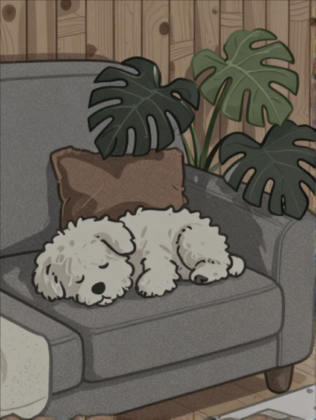
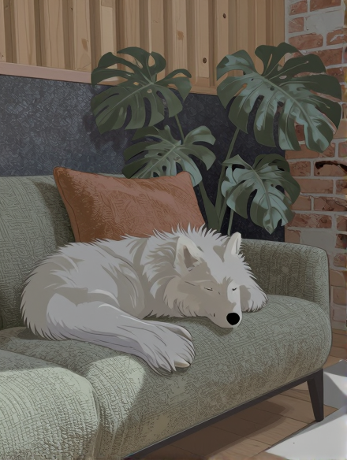

Check first: Apple menu, then About This Mac. Chip must say Apple M1 or newer. Intel Macs can't run ComfyUI Desktop.
Go to comfy.org/download and download the Mac version.
Open the downloaded .dmg file (in your Downloads folder).
Drag the ComfyUI icon onto the Applications folder.
Open Applications and double-click ComfyUI.
If macOS says it can't be opened: System Settings, then Privacy & Security, scroll down and click Open Anyway.
On the first screen, choose Local (runs on your laptop, not in the cloud).
Tick I agree to the EULA and Terms of Service.
Sharing anonymous usage data is optional. Untick it if you prefer.
Tick Express Install and continue.
Wait while it installs. When it's done you'll see a canvas with boxes joined by wires. That's a workflow.
Where things are keptPrograms: ~/ComfyUI-Installs Models and your images: ~/ComfyUI-Shared
Install on Windows
Check first: open Task Manager (Ctrl + Shift + Esc), then Performance. Look for a GPU that says NVIDIA or AMD. No graphics card? It still works, just slower.
Go to comfy.org/download and download the Windows version.
Open the downloaded .exe file (in your Downloads folder) and follow the installer.
Open ComfyUI from the Start menu or the desktop shortcut.
On the first screen, choose Local (runs on your laptop, not in the cloud).
Tick I agree to the EULA and Terms of Service.
Sharing anonymous usage data is optional. Untick it if you prefer.
Tick Express Install and continue.
Wait while it installs. When it's done you'll see a canvas with boxes joined by wires. That's a workflow.
Where things are keptPrograms: %LOCALAPPDATA%\Comfy-Desktop\ComfyUI-Installs Models and your images: %LOCALAPPDATA%\Comfy-Desktop\ComfyUI-Shared Paste either path into the File Explorer address bar to open it.
Install on Linux
Go to comfy.org/download and download the Linux version that suits your distro.
Ubuntu, Debian, Mint, Pop!_OS: the .deb
Open a terminal in your Downloads folder and install it:
cd ~/Downloads
sudo apt install ./*.deb
Open ComfyUI from your applications menu.
Fedora, Arch and everything else: the AppImage
AppImages need FUSE 2. On Ubuntu 24.04 or newer:
sudo apt install libfuse2t64
On Ubuntu 22.04: sudo apt install libfuse2
Make it runnable and start it:
cd ~/Downloads
chmod +x ./*.AppImage
./*.AppImage
Once it's runnable you can also double-click it in your file manager.
First launch
Choose Local, tick I agree to the EULA and Terms of Service, tick Express Install and continue.
Wait while it installs. Then you'll see a canvas with boxes joined by wires. That's a workflow.
Where things are keptPrograms: ~/ComfyUI-Installs Models and your images: ~/ComfyUI-Shared
Copy the models
The USB stick has a models folder with four folders inside. ComfyUI has folders with the same names. Copy the files from each folder on the stick into the folder with the same name on your laptop.
Folder
File
Size
diffusion_models
z_image_turbo-Q5_K_M.gguf
5.5 GB
text_encoders
Qwen_3_4b-Q6_K.gguf
3.1 GB
vae
ae.safetensors
0.3 GB
upscale_models
4x_foolhardy_Remacri.safetensors
0.03 GB
Where the ComfyUI folders are
Mac: in Finder press Shift + Cmd + G and paste:
~/ComfyUI-Shared/models
Windows: paste this into the File Explorer address bar:
The workflows folder (two .json files) to your Desktop. Then pass the stick on.
Copy, don't run from the stickModels load faster from your laptop, and you keep them after today.
Add GGUF support
Our models are .gguf files: compressed so they fit on a laptop. ComfyUI needs a small add-on to read them. This step needs internet.
Click the Nodes Manager icon (top right, small squares).
Type gguf in the search box.
On ComfyUI-GGUF by city96, click Install. Not the one just called "gguf".
Click Apply changes when asked. ComfyUI restarts its engine.
Make your first image
Drag z-image-text-to-image.json onto the ComfyUI window. A workflow opens: boxes joined by wires. You can eject the stick now and pass it on.
Turn on the live preview: the gear (bottom left), search preview, set Live preview method to auto.
On the orange box, set width and height to 512.
Click the prompt box and write what you want. Ideas:
A tiny lighthouse rising out of a teacup, its beam sweeping across a stormy sea of spilled tea, morning light.
A glass light bulb on a wooden desk with a tiny jungle growing inside, the filament shining like the sun.
Close other apps, then click Run. On a 16 GB laptop expect 3½ to 5½ minutes. Your picture appears in Save Image.
Tips, and what's inside
Say the main thing first
"A knitted balloon over pancake mountains" put the pancakes on the balloon. Describing the landscape first and the balloon last worked better. The main subject soaks up the details.
Faster
Close other apps. When memory is full the laptop swaps to disk and gets many times slower.
Use 512 × 512. 1024 × 1024 is four times the work.
What's in the 9 GB
Part
Model
Size
Image model
Z-Image Turbo, 6 billion parameters
5.5 GB
Text encoder
Qwen 3, 4 billion parameters. Turns your words into numbers.
3.1 GB
VAE
Turns the result into pixels
0.3 GB
Parameters and bits
Parameters are the numbers a model learned. Bits are how precisely each one is stored. Fewer bits: smaller and lighter, slightly less detail.
Z-Image Turbo
Bits
Size
Full
16
11.5 GB
Q8
8
6.1 GB
Q5 (ours)
about 5
5.5 GB
Q3
about 3
4.1 GB
Turn a photo into a cartoon
Same model, but it starts from your photo instead of noise.
Drag z-image-cartoon.json onto ComfyUI.
Click Enter subgraph at the bottom of the orange box.
On Load Image, click choose file to upload and pick your photo. Big phone photos are shrunk automatically.
On KSampler, set denoise (see below), then click the workflow name at the top to go back out.
In prompt, describe what's really in your photo, colours too, and add a style:
Cartoon illustration of a white Samoyed-type dog with pointy ears, eyes closed, on a sage green couch. Bold outlines, flat colours.
Click Run.
Denoise: how much changes
Photo

0.6More cartoon, a different dog

0.45Same dog, softer style
Load the smaller model
Appendix: how the workflow on the USB stick was built from ComfyUI's Z-Image-Turbo template. You don't need this to make pictures.
The smaller model is a .gguf file. ComfyUI's own loader can't read it, so we swap in the GGUF loader. On the Z-Image-Turbo template, click Enter on the Text to Image (Z-Image-Turbo) box to see inside it.
Open Nodes in the left sidebar and search gguf. Drag Unet Loader (GGUF) into the empty space above Step1 - Load models.
Drag from its MODEL dot to the model dot on ModelSamplingAuraFlow. The old wire is replaced.
Click its unet_name box and choose z_image_turbo-Q5_K_M.gguf.
Use a ComfyUI GGUFSome .gguf files are made for other programs and fail with a "size mismatch" error. The jayn7 Z-Image-Turbo-GGUF files on Hugging Face work.
Load the smaller text encoder
The text encoder turns your prompt into something the image model understands. It's a .gguf file too, so it gets the same swap.
In Nodes, search gguf. Drag CLIPLoader (GGUF) into the empty space left of Unet Loader (GGUF).
Drag from its CLIP dot to the clip dot on CLIP Text Encode (Prompt). The old wire is replaced.
Click clip_name and choose Qwen_3_4b-Q6_K.gguf. Click type and choose lumina2.
Delete the two old orange loaders (Load Diffusion Model and Load CLIP): click each title, press Delete. Keep Load VAE.